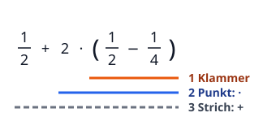
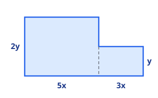

Medienübersicht
Alle Bilder, Audios und Videos dieser App mit ihrer Quelle und ihrer Lizenz.
Bilder

images/brueche-pizza.svgQuelle: eigene Zeichnung. Lizenz: CC-BY-4.0.Verwendet auf: Brüche und Dezimalbrüche addieren und subtrahieren

images/brueche-hauptnenner.svgQuelle: eigene Zeichnung. Lizenz: CC-BY-4.0.Verwendet auf: Brüche und Dezimalbrüche addieren und subtrahieren

images/brueche-drittel.svgQuelle: eigene Zeichnung. Lizenz: CC-BY-4.0.Verwendet auf: Brüche und Dezimalbrüche multiplizieren und dividieren

images/brueche-rechteck-modell.svgQuelle: eigene Zeichnung. Lizenz: CC-BY-4.0.Verwendet auf: Brüche und Dezimalbrüche multiplizieren und dividieren

images/brueche-reihenfolge.svgQuelle: eigene Zeichnung. Lizenz: CC-BY-4.0.Verwendet auf: Klammern und Punkt vor Strich

images/terme-rechteck.svgQuelle: eigene Zeichnung. Lizenz: CC-BY-4.0.Verwendet auf: Terme aufstellen

images/terme-zwei-rechtecke.svgQuelle: eigene Zeichnung. Lizenz: CC-BY-4.0.Verwendet auf: Terme aufstellen

images/terme-wertetabelle.svgQuelle: eigene Zeichnung. Lizenz: CC-BY-4.0.Verwendet auf: Werte von Termen berechnen

images/terme-einsetzen.svgQuelle: eigene Zeichnung. Lizenz: CC-BY-4.0.Verwendet auf: Werte von Termen berechnen

images/terme-staebe.svgQuelle: eigene Zeichnung. Lizenz: CC-BY-4.0.Verwendet auf: Gleichartige Glieder zusammenfassen

images/terme-sortieren.svgQuelle: eigene Zeichnung. Lizenz: CC-BY-4.0.Verwendet auf: Gleichartige Glieder zusammenfassen

images/terme-l-figur.svgQuelle: eigene Zeichnung. Lizenz: CC-BY-4.0.Verwendet auf: Gleichartige Glieder zusammenfassen

images/terme-vorzeichen-muster.svgQuelle: eigene Zeichnung. Lizenz: CC-BY-4.0.Verwendet auf: Produkte von Termen

images/terme-flaeche-zusammengesetzt.svgQuelle: eigene Zeichnung. Lizenz: CC-BY-4.0.Verwendet auf: Produkte von Termen

images/w1-rechteck-klammern.svgQuelle: eigene Zeichnung. Lizenz: CC-BY-4.0.Verwendet auf: Klammern auflösen

images/w1-jedes-mit-jedem.svgQuelle: eigene Zeichnung. Lizenz: CC-BY-4.0.Verwendet auf: Klammern auflösen

images/w1-waage.svgQuelle: eigene Zeichnung. Lizenz: CC-BY-4.0.Verwendet auf: Gleichungen lösen

images/w1-zahlenstrahl-start.svgQuelle: eigene Zeichnung. Lizenz: CC-BY-4.0.Verwendet auf: Ungleichungen lösen

images/w1-zahlenstrahl-spiegeln.svgQuelle: eigene Zeichnung. Lizenz: CC-BY-4.0.Verwendet auf: Ungleichungen lösen

images/w1-nullprodukt-zweige.svgQuelle: eigene Zeichnung. Lizenz: CC-BY-4.0.Verwendet auf: Satz vom Nullprodukt

images/w1-zahlenstrahl-menge.svgQuelle: eigene Zeichnung. Lizenz: CC-BY-4.0.Verwendet auf: Lösungsmenge und Grundmenge